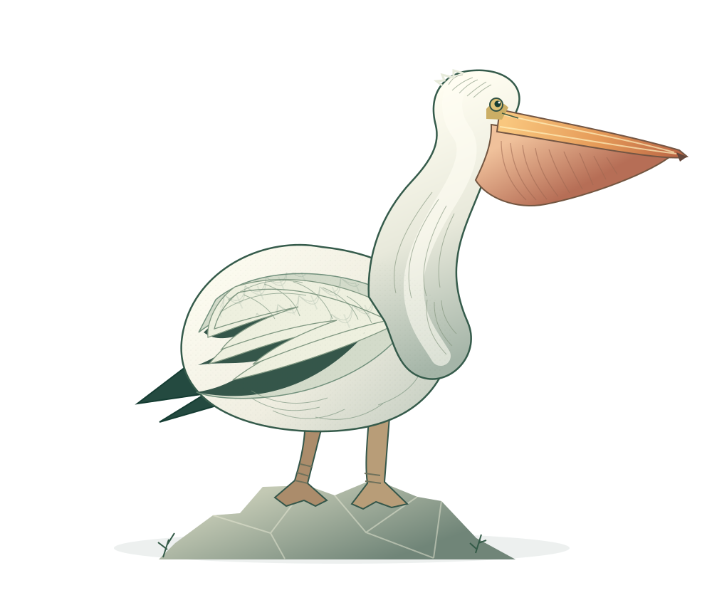

同行，是一种日常
鹈鹕常集群活动。美洲白鹈鹕会一起觅食，也可成群飞行，利用上升气流滑翔。群体合作捕鱼与借风飞行，让它们的日常充满默契。
群体活动 / SOCIAL LIFE
长喙、喉囊、宽翼、蹼足。
醒目的外表之下，是与水和天空相处的方式。
点击标记，看看它们如何工作。
并非所有鹈鹕都住在海边。
从内陆湖泊到海岸河口，
认识三个物种，打开三扇观察的窗。
Pelecanus occidentalis
从空中发现目标，再俯冲入水。褐鹈鹕常见于美洲沿岸和河口，这种引人注目的捕食方式，是它的一大特点，却不是所有鹈鹕的共同习惯。
它曾受到农药污染影响，保护措施促进了恢复；这不代表所有鹈鹕种群都已没有风险。
这里展示三个物种例子，并非鹈鹕的完整物种名单。
美洲白鹈鹕常在浅水水面捕食，也会协作把鱼驱向浅水。一起围鱼，是它们水边生活的一部分。
示意图用于理解过程，不按真实速度或比例呈现。鱼是主要食物，但不是唯一食物：美洲白鹈鹕也会取食蝾螈、蝌蚪和小龙虾等，食谱随当地环境与食物供应变化。
看见一只鹈鹕，也试着看见它的同伴、巢区，以及供养它们的水域。
湿地与繁殖地改变、人为干扰、污染，以及被遗弃的渔线，都可能威胁鹈鹕。褐鹈鹕的恢复故事让人看到保护的意义，但不同种群依然面临各自的风险。
与繁殖地保持距离，使用望远镜观察。美洲白鹈鹕的繁殖群对人为干扰敏感。
让它们继续自然的觅食与休息。不为一张更近的照片惊扰、围堵或追逐。
不遗留渔线、鱼钩和其他垃圾，减少鸟类被缠绕的风险，也保护共同的水域。
把第一印象，换成真正的了解。
三个小问题，带走一份新的观察力。
内容依据本地《鹈鹕科普资料卡》整理，事实核对日期：2026-10-20。以下为材料提供的来源名称，页面不加载外部资源。未使用原站摄影作品。
所有插画均为本页原创 SVG 形态意绘，不按比例，不作为野外物种鉴别依据。捕食交互为过程示意，不代表精确动作或速度。